1 August · Dusk
The opening
Wisdom keepers open the New Moon circle in candlelit ceremony.

Your invitation to totality
30 July to 9 August 2027
Luxor, the Nile, and Giza
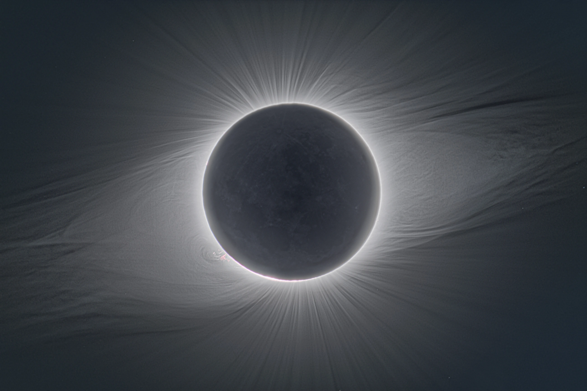
The moment
6 minutes 23 seconds
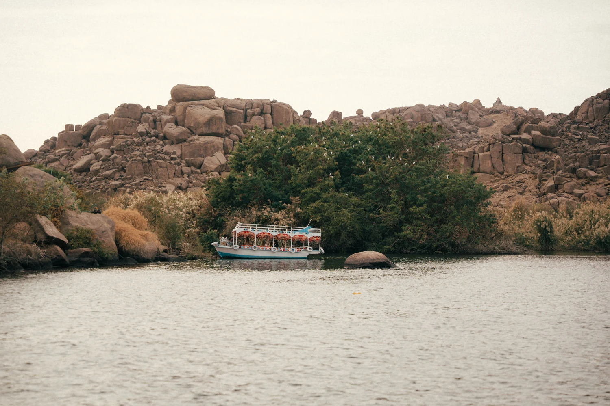
The place
Sail between green shores and desert stone.
Step into temples that still hold their mysteries.
Every path meets in Luxor.
Continue the journeyScroll to cross the threshold
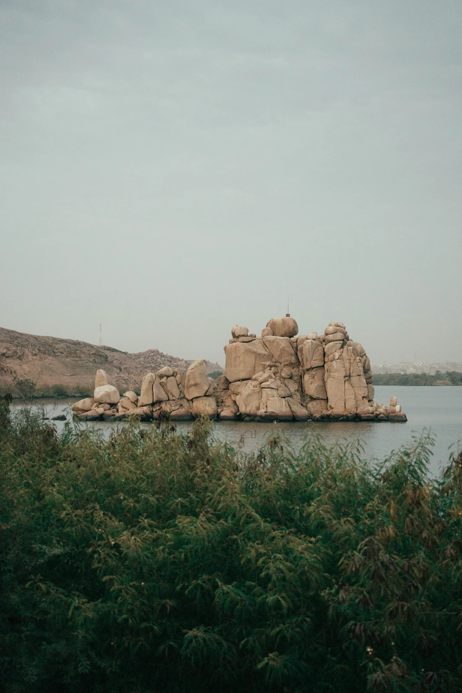
The journey
30 July to 9 August 2027
Luxor, the Nile, and Giza

The stays
Accommodation options that meet Eclipse Seekers where they are
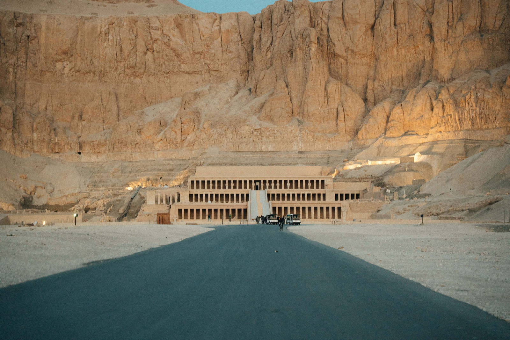
The gathering
All Seekers gather on Luxor’s West Bank, 1–3 August.
Beneath the corona.

The extension
Three nights in Cairo and Giza, with a Lion’s Gate celebration at the feet of the Sphinx on 8 August.
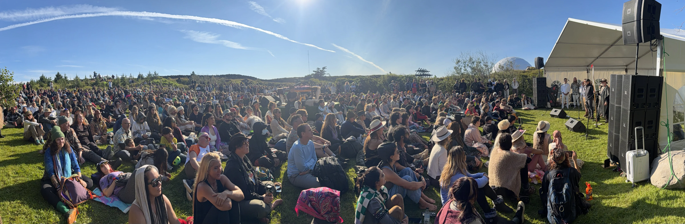
The community
Seekers from around the globe come together in Egypt.
Countries

The reach
Reach and press from our latest eclipse gathering.
Estimated event impressions

The tradition
Science and spirit. Music and art.
A shared sense of wonder.

The team
Produced by IMXP with ENEV Travel and Insider Expeditions and guided by experienced voyagers.
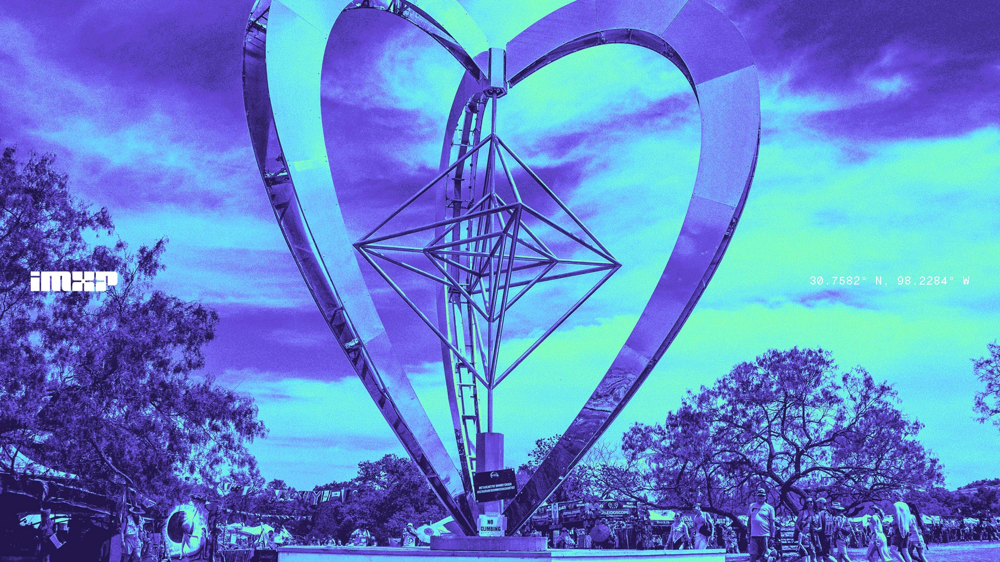
The Vision
Art, music, science, spirit and technology.
Shared experiences that bring us closer.
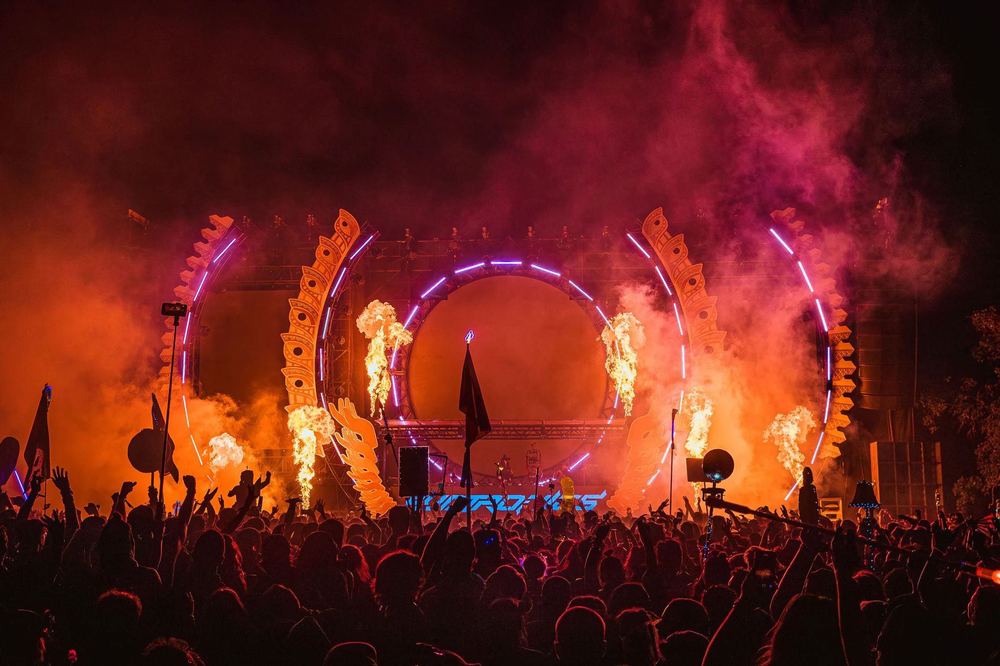
The calendar
Coherence · ATOMIKA
Midnight Sun Festival · Egypt Eclipse
Your invitation
30 July to 9 August 2027
Luxor, the Nile, and Giza

The gathering
All Seekers gather on Luxor’s West Bank, 1–3 August.
1 August · Dusk
Wisdom keepers open the New Moon circle in candlelit ceremony.
2 August · Eclipse
6m 23s beneath the corona. An Egyptian feast, music and celebration.
3 August · Morning
A shared brunch before the journey continues.


The extension · 6—9 August
Three nights in Cairo and Giza, with a Lion’s Gate celebration at the feet of the Sphinx on 8 August.
Bazaars, local makers and the stories of Cairo.
Ancient Egypt, extraordinary art and artefacts.
Five millennia of history on the Giza plateau.
Music at the feet of the Sphinx. A shared final night.
The community
Seekers from around the globe come together in Egypt.

Iceland 2026 · 4,200 participants · 250 artists & speakers
Entrepreneurs, scientists, astronauts and artists gathered in Iceland. In Egypt, shared meals, excursions and multi-night stays create time for relationships, product use and thoughtful hospitality.
The reach
Reach and press from our latest eclipse gathering.

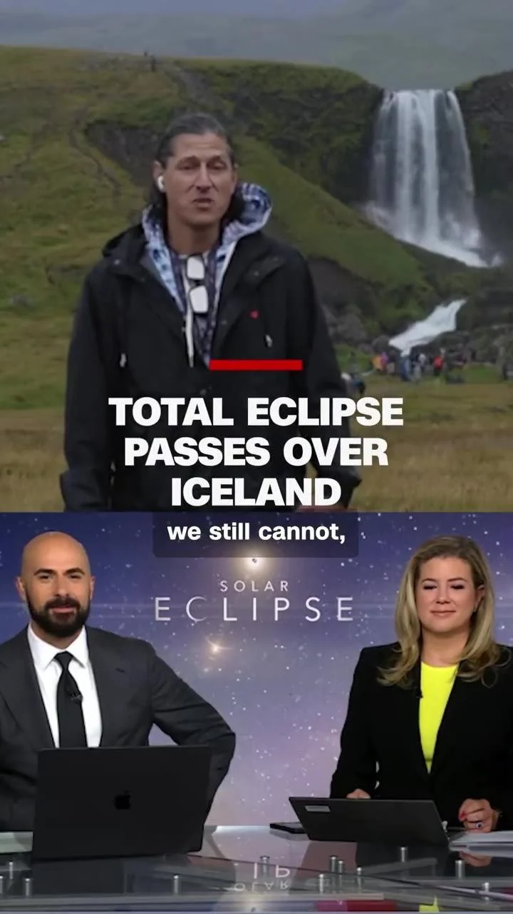
Also featured inGood Morning America · National Geographic · Billboard · Space.com · Condé Nast Traveler · Live Science · SETI Institute
The tradition
Science and spirit. Music and art. A shared sense of wonder.
We’ve gathered tens of thousands in Texas and Iceland, bringing science, art and spirit together. Each gathering is shaped for its location, rooted in the local culture and scaled to the occasion.


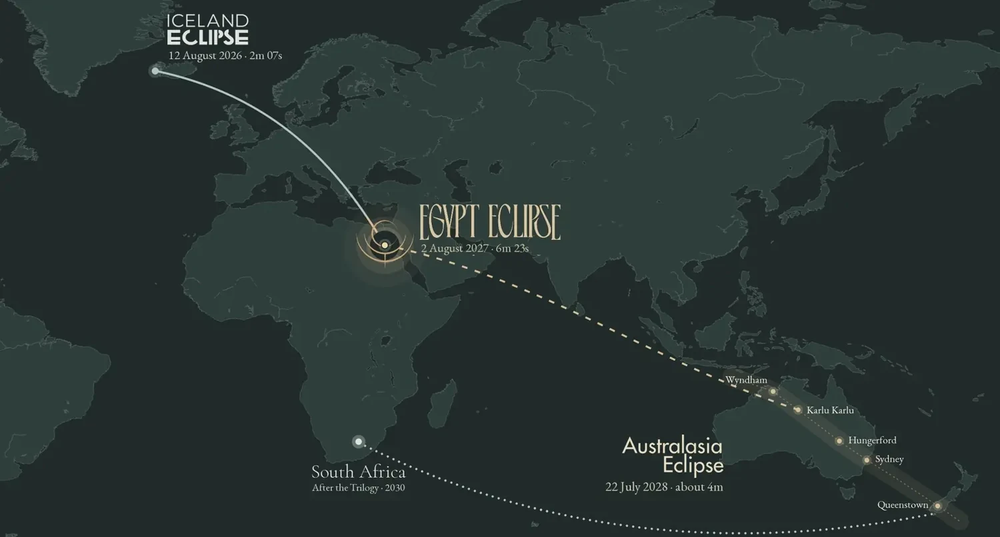
The team
Produced by IMXP with ENEV Travel and Insider Expeditions and guided by experienced voyagers.

Producer of Iceland Eclipse and the Trilogy. Art, music, science and spirit, brought together.
An Egyptian travel specialist since 1999. Cruises, hotels, transport and local experiences.

Journeys and retreats on all seven continents, for individuals, companies and brands.
Path of Totality
Ilana is a community builder, entrepreneur, and lifelong eclipse chaser. Raised in a family that followed the moon’s shadow around the world, Egypt 2027 will mark her eighth total solar eclipse. Now a mom of twins, she’s carrying that family tradition forward. For Ilana, an eclipse isn’t just something to watch. It’s a threshold, and the people you cross it with matter as much as the moment itself. The longest Totality of our lifetimes is the one she’s been building toward all along.

Sales & Project Director, Egypt Eclipse 2027
Joshua Barber has been traveling to Egypt for more than a decade. What began as a personal spiritual pilgrimage has become a lifelong relationship with its temples, the Nile, and its people. Today, as Sales & Project Director for Egypt Eclipse 2027, he brings that depth to shaping immersive experiences around the longest total solar eclipse over land this century, seen from the heart of ancient Egypt.

Founder, Ziva Meditation
Emily Fletcher is the founder of Ziva Meditation and the author of Stress Less, Accomplish More. She has led journeys through Egypt’s temples for years.
Founder, Academy of Oracle Arts
Isis Indriya is a minister, fire keeper, and the founder of the Academy of Oracle Arts, where she teaches ritual, divination, Hermeticism, and Egyptian cosmology. She has led pilgrimages to Egypt for years.
The calendar
Four gatherings connecting art, music, science, spirit and technology.
19—22 March · Austin

Spring Equinox connection and co-creation.
7—9 May · Roswell
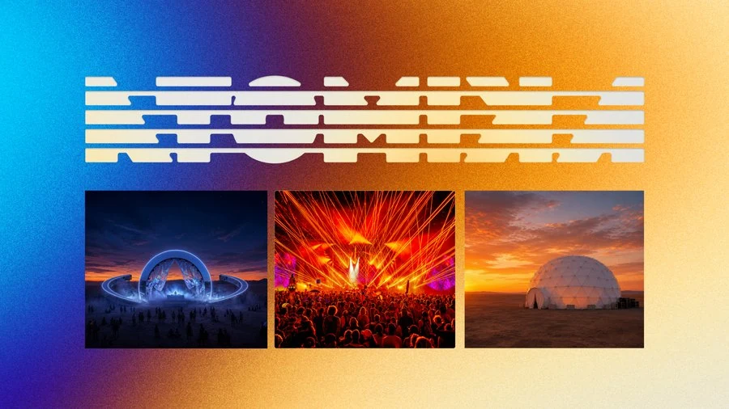
Music and inquiry at a former missile silo.
9—11 July · Reykjavík

Music, art and culture under endless light.
30 July—9 August · Egypt

The eclipse journey at the heart of this invitation.
Discover more gatherings from IMXP.

Pinch to zoom, or use the controls above.
The stays
Accommodation options that meet Eclipse Seekers where they are
7 nights · 30 July—6 August
Temples along the Nile, with river-view cabins.
Starting at $9,999

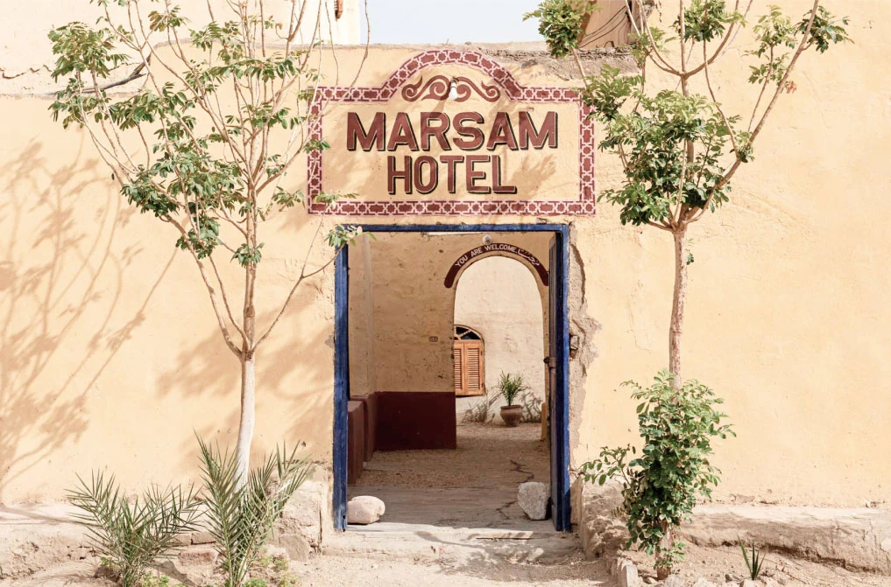
5 nights · 1—6 August
An archaeologists’ retreat, beside the Gathering.
Starting at $6,600

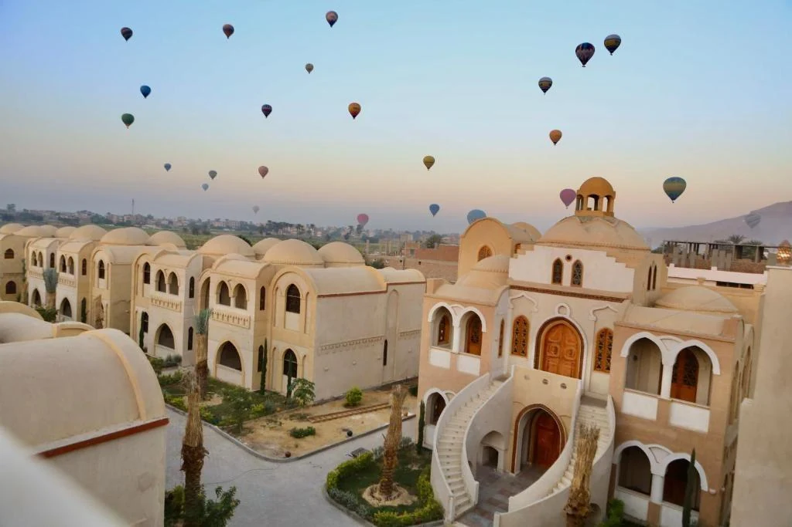
7 nights · 30 July—6 August
Villas, gardens and a pool, with spa and gym.
Starting at $5,500

The moment
Egypt Eclipse gathers a high-profile, global community of Seekers for 10 days along the Nile to align with the cosmos.
30 July to 9 August 2027 · Luxor, the Nile, and Giza
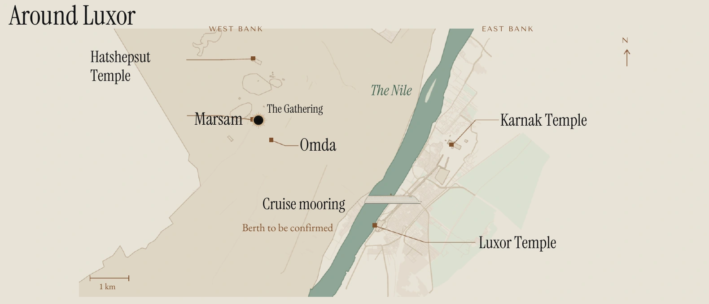
Use the zoom controls to explore. Cruise berth to be confirmed.
Inside IMXP
Art, music, science, spirit and emerging technology—brought together to cultivate awe, deepen connection and expand what we believe is possible.
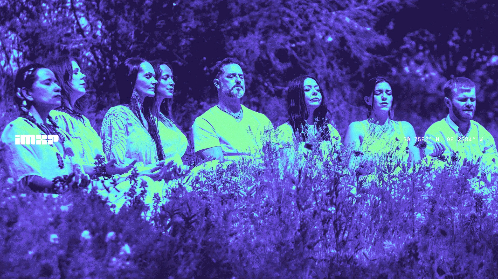
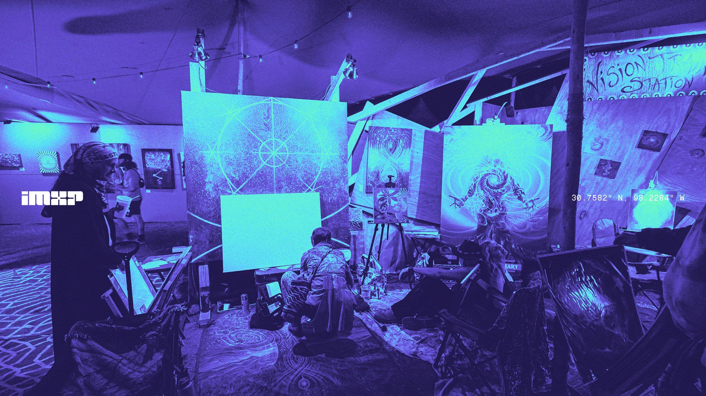
Bring different ways of seeing the world into one place. Scientists, artists and cultural voices meet through conversation, music, ceremony and discovery.
The ambition is lasting connection: communities that keep creating together, and places shaped with the people who call them home.
The Eclipse Missions
IMXP’s community-led exploration plan starts with gatherings on Earth and reaches toward a striking goal: watching Earth eclipse the Sun from the Moon.
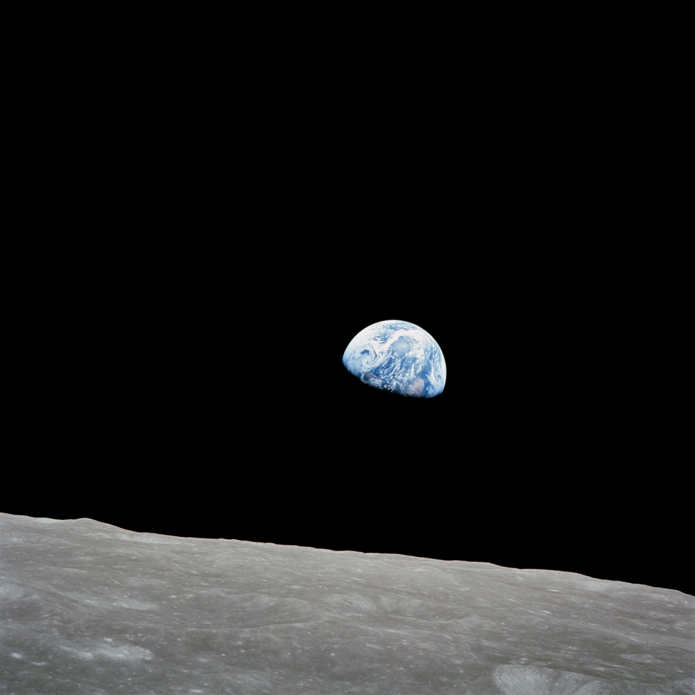
Earthrise, Apollo 8, 1968.
A real view of Earth from lunar orbit—and a perspective that inspires the journey ahead.
NASA / Bill Anders
Beginning with Iceland and Egypt, the plan continues through Australasia. From 2028, the ambition is to create enduring gathering places with local communities, alongside a planned Antarctic expedition and first balloon flights.
Apophis and Red Moon gatherings extend the program beyond solar eclipses. The roadmap pairs planned suborbital flights in 2029–2030 with proposed orbital experiences in 2031–2032.
A community crew in lunar orbit is the next target: a step toward experiencing Earth passing in front of the Sun.
The program’s stated goal is 7 August 2036, with a gathering on the lunar surface connected to communities watching the red Moon from Earth.
The vision extends to a permanent gathering place on the Moon, carrying art, culture and human connection beyond Earth.
These are the program’s published plans, proposals and long-term goals—not confirmed flight offerings.
The community is the mission
Contribute through practical work, creative expression or financial support. The Seeker community is invited to help shape the journey, not simply watch it unfold.